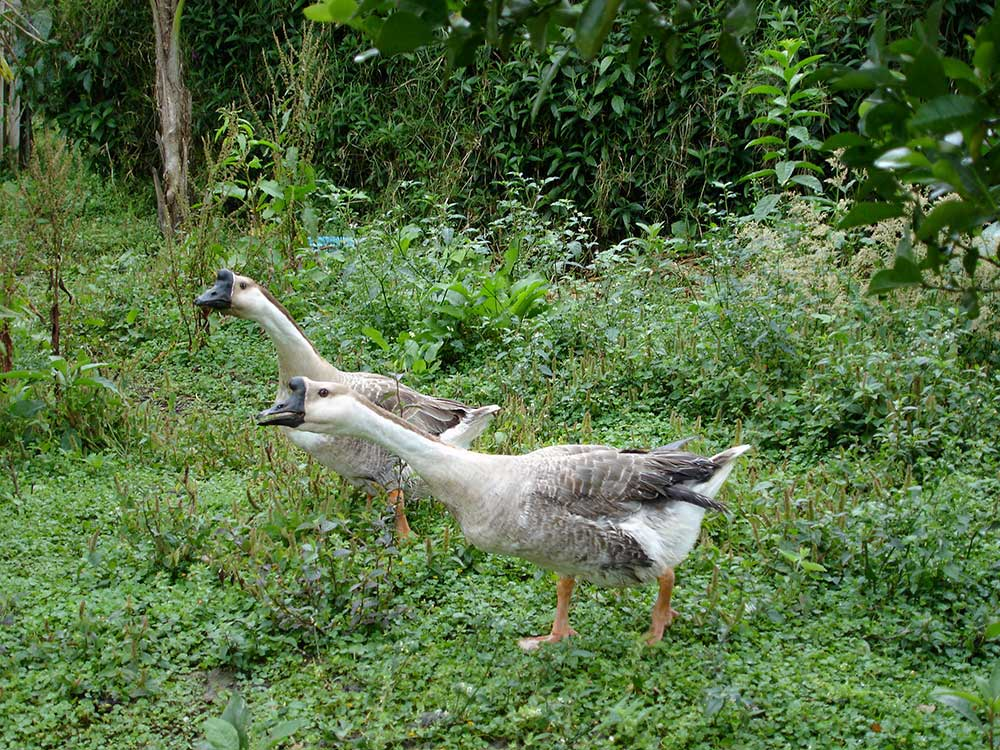
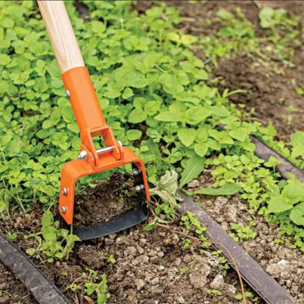
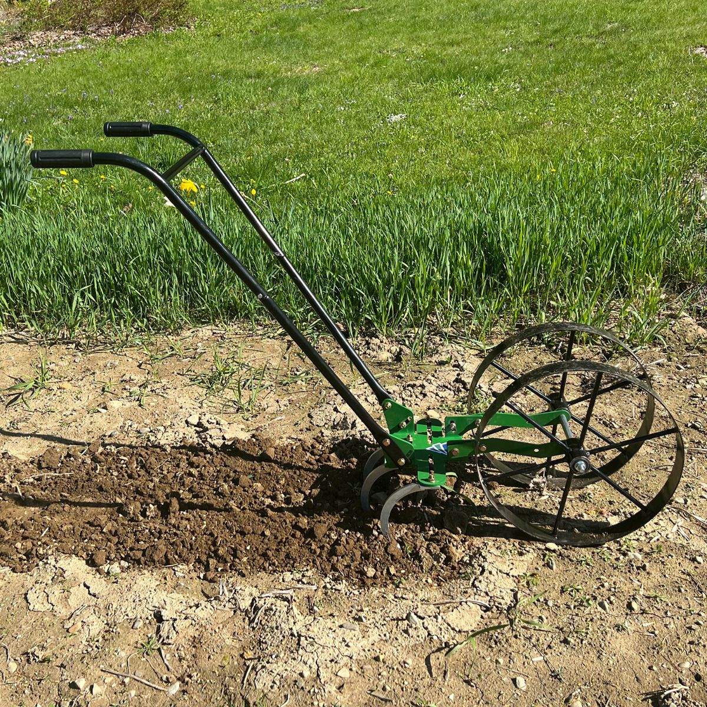
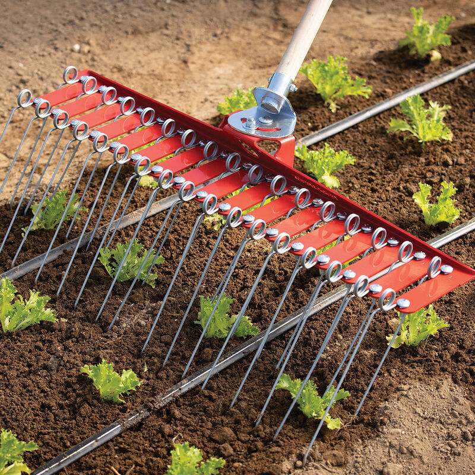
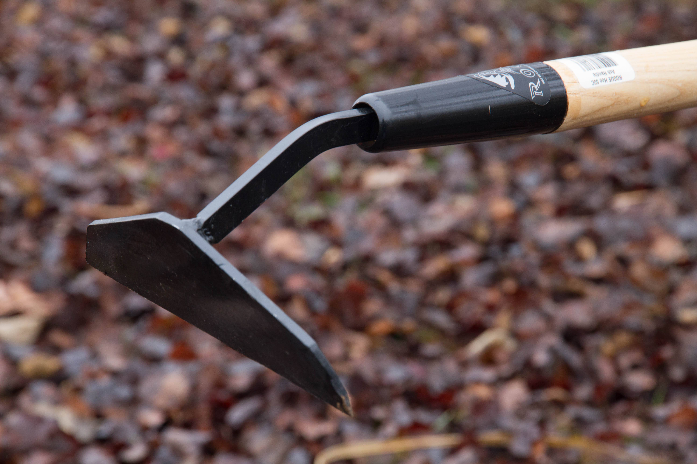

Weed-Control Strategies
- Crop rotation
- Changes growing conditions and habitat, helping disrupt weed establishment.
- Cultivation
- Disturbs or uproots weeds with tools such as hoes and weeders. Target weeds while they are small.
- Tarps
- Cover the soil to block light and suppress weeds.
- Mulching
- Covers the soil surface to limit weed growth. Different materials offer different benefits and trade-offs.
- Biological control
- Weeder geese!

Cultivation: Timing and Conditions
Target Small Weeds
Cultivation is most effective when weeds are young and shallow-rooted.
- White-thread stage
- The stage after germination but before weeds emerge above the soil surface.
- Stale seedbed
- Prepare a bed, allow weeds to germinate, and remove them before planting the crop.
- Weather conditions
- Hot, sunny, dry conditions help uprooted weeds dry out.
- Cultivation depth
- Cultivate as shallowly as possible while still effectively killing weeds.
Mulches and Ground Covers
Organic Mulch
Trade-offs
- May provide habitat for slugs
- Some weeds may continue to grow through it
- Can be costly and time-consuming to spread
Synthetic Mulch and Ground Covers
Benefits
- Can provide effective weed suppression
- Can change soil temperature and moisture conditions, depending on the material
Landscape Fabric
Benefits
- Reusable
- Durable
Trade-offs
- Can be expensive
- Creating planting holes can require substantial labor
Biodegradable Plastic Film
Benefits
- Less expensive than landscape fabric
- Easier to make planting holes
- Designed to biodegrade
Trade-offs
- Can be fragile
Weed-Management Tools
Stirrup Hoe
Used for small, young weeds in loose soil, raised beds, or straight garden rows.

Wheel Hoe
- Used to cultivate shallow-rooted weeds
- Can reduce strain on the back and neck
- Can cover ground more efficiently than a handheld hoe

Flex-Tine Weeder
Uses flexible tines to uproot small, shallow weeds. It can be used for blind cultivation when appropriate for the crop and its growth stage.

Collinear Hoe
Slices weeds near the soil surface. Its narrow blade allows careful cultivation near crop stems.

Sources and Supporting Materials
- Lecture 4 Materials
- The Market Gardener: Forward, Preface & Chapters 9 & 10 p.101-118